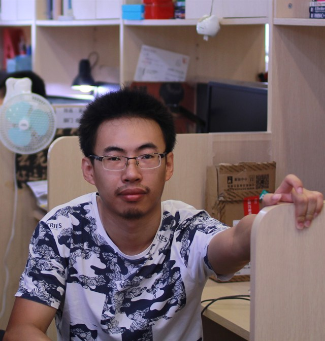

Computer Vision & Machine Learning
Yunhang Shen沈云航
Ph.D. · Xiamen University
shenyunhang01 AT gmail.com (preferred)
yhshen AT stu.xmu.edu.cn

About me
I finished my Ph.D. study at the Department of Artificial Intelligence, School of Informatics, Xiamen University, in 2021, advised by Prof. Rongrong Ji.
I received the B.S. and M.S. degrees in Cognitive Science and Technology from Xiamen University in 2014 and 2017, respectively.
I was a research intern at Microsoft Research Asia (MSRA) from May 2016 to June 2017, under the supervision of Dr. Changhu Wang and Dr. Kuiyuan Yang.
Research interests
My research interests are in Computer Vision, Multimodal Learning and Machine Learning. Recently, I focus on:
- Multimodal large language models (MLLMs)
- Omni-modal interaction with vision, speech & audio
- Long-context multimodal understanding
- Evaluation benchmarks for MLLMs
- Document parsing & universal visual perception
- Weakly supervised & open-vocabulary detection and segmentation
Selected Publications
Full publication list →2026
-
Youtu-Parsing-Omni: One Encoder, One Schema, Every ModalityarXivarXiv preprint, 2026
-
Video-MME-v2: Towards the Next Stage in Benchmarks for Comprehensive Video UnderstandingarXivarXiv preprint arXiv:2604.05015, 2026
2025
-
Long-VITA: Scaling Large Multi-modal Models to 1 Million Tokens with Leading Short-Context AccuracyarXivarXiv preprint arXiv:2502.05177, 2025
-
VITA-Audio: Fast Interleaved Cross-Modal Token Generation for Efficient Large Speech-Language ModelNeurIPSAdvances in Neural Information Processing Systems (NeurIPS), 2025
-
VITA-1.5: Towards GPT-4o Level Real-Time Vision and Speech InteractionNeurIPSAdvances in Neural Information Processing Systems (NeurIPS), 2025 (Spotlight)
-
MME: A Comprehensive Evaluation Benchmark for Multimodal Large Language ModelsNeurIPSAdvances in Neural Information Processing Systems (NeurIPS) Datasets and Benchmarks Track, 2025 (Spotlight)
-
Video-MME: The First-Ever Comprehensive Evaluation Benchmark of Multi-modal LLMs in Video AnalysisCVPRIEEE/CVF Conference on Computer Vision and Pattern Recognition (CVPR), 2025
2024
-
Aligning and Prompting Everything All at Once for Universal Visual PerceptionCVPRIEEE/CVF Conference on Computer Vision and Pattern Recognition (CVPR), 2024
-
VITA: Towards Open-Source Interactive Omni Multimodal LLMarXivarXiv preprint arXiv:2408.05211, 2024
-
Weakly Supervised Open-Vocabulary Object DetectionAAAIAAAI Conference on Artificial Intelligence (AAAI), 2024
2023
-
FoPro: Few-Shot Guided Robust Webly-Supervised Prototypical LearningAAAIAAAI Conference on Artificial Intelligence (AAAI), 2023
2022
-
SeqTR: A Simple yet Universal Network for Visual GroundingECCVEuropean Conference on Computer Vision (ECCV), 2022
2021
-
Parallel Detection-and-Segmentation Learning for Weakly Supervised Instance SegmentationICCVIEEE/CVF International Conference on Computer Vision (ICCV), 2021
-
Toward Joint Thing-and-Stuff Mining for Weakly Supervised Panoptic SegmentationCVPRIEEE/CVF Conference on Computer Vision and Pattern Recognition (CVPR), 2021
-
E2Net: Excitative-Expansile Learning for Weakly Supervised Object LocalizationACM MMACM International Conference on Multimedia (ACMMM), 2021
2020
-
UWSOD: Toward Fully-Supervised-Level Capacity Weakly Supervised Object DetectionNeurIPSConference on Neural Information Processing Systems (NeurIPS), 2020
-
Enabling Deep Residual Networks for Weakly Supervised Object DetectionECCVEuropean Conference on Computer Vision (ECCV), 2020
-
Noise-Aware Fully Webly Supervised Object DetectionCVPRIEEE/CVF Conference on Computer Vision and Pattern Recognition (CVPR), 2020
2019
-
Category-Aware Spatial Constraint for Weakly Supervised DetectionTIPIEEE Transactions on Image Processing (TIP), 2019
-
A Part Power Set Model for Scale-Free Person RetrievalIJCAIInternational Joint Conference on Artificial Intelligence (IJCAI), 2019
-
Cyclic Guidance for Weakly Supervised Joint Detection and SegmentationCVPRIEEE/CVF Conference on Computer Vision and Pattern Recognition (CVPR), 2019
2018
-
Generative Adversarial Learning towards Fast Weakly Supervised DetectionCVPRIEEE/CVF Conference on Computer Vision and Pattern Recognition (CVPR), 2018
-
Weakly Supervised Object Detection via Object-Specific Pixel GradientTNNLSIEEE Transactions on Neural Networks and Learning Systems (TNNLS), 2018
Before 2017
-
Hacking Chinese Touclick CAPTCHA by Multi-Scale Corner Structure Model with Fast Pattern MatchingACM MMACM International Conference on Multimedia (ACM MM), 2014
-
The Distributed System for Inverted Multi-index Visual RetrievalNeurocomp.Neurocomputing, 2016
-
Robotic Free Writing of Chinese Characters via Human–Robot InteractionsIJHRInternational Journal of Humanoid Robotics, 2014
Honors and Awards
- National Scholarship2019
- National Scholarship2016
- National Scholarship2015
- 1st Prize and new records, Music Information Retrieval Evaluation eXchange (MIREX)2015
- National Endeavor Scholarship2013
- 1st Prize, National Intelligent Design Competition2013
- National Endeavor Scholarship2011